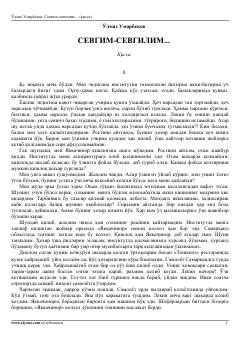

SYosh yigitning qishloqdagi hayoti va sevgi sinovlari haqida qissa.
Bu qissa institutni endigina tamomlagan yigitning Samarqand viloyatidagi Yakkachinor qishlog'iga ishga borishi va u yerda boshidan kechirgan voqealarini hikoya qiladi. Asarda yoshlik, sevgi, hayot sinovlari va qishloq hayotining go'zalligi tasvirlanadi. O'lmas Umarbekovning bu asari o'zbek nasrining yorqin namunalaridan biri hisoblanadi.